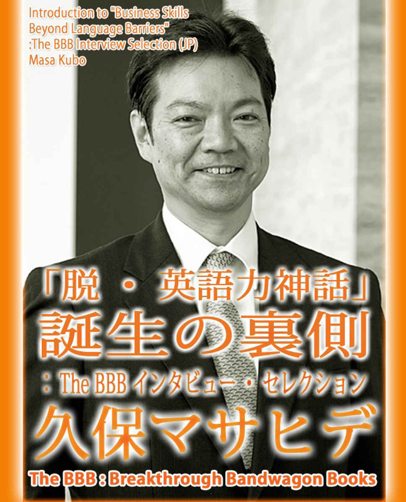
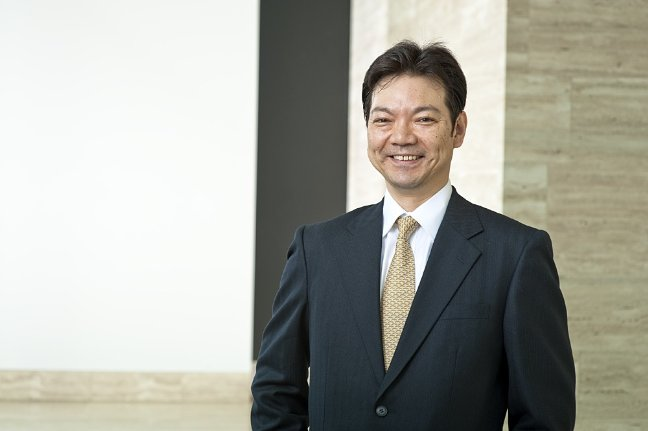

| 「脱・英語力神話」誕生の裏側 (The BBB: Breakthrough Bandwagon Books) | |
| 久保マサヒデ | |
| The BBB: Breakthrough Bandwagon Books (2016) | |

邦題 : 『 「脱・英語力神話」 誕生の裏側』
Written in Japanese by Masa Kubo
Edited by Ryusui Seiryoin
Editorial Support by Natsuko Shibuya
Cover design by Tanya
C opyri ght © 2016 Masahide Kubo / The BBB: Breakthrough Bandwagon Books
All rights reserved.
ISBN: 978-1-365-01461-1
The BBB 編集長（以下、 B ） : 本日は、このたび The BBB: Breakthrough Bandwagon Books から刊行させていただく『脱・英語力神話』というご本の著者、久保マサヒデさんのお話をうかがいたいと思います。久保さん、本日は、よろしくお願いいたします。
久保マサヒデ（以下、久保） : よろしくお願いします。
B: まずは、久保さんがどういう方か、ということを簡単にお話しいただきたいのですが、よろしいでしょうか？
久保 : はい。私は、元々は日本の銀行、日本長期信用銀行に勤めて いました。 1988 年に入行しまして、 94 年に は ロンドン支店に駐在員として派遣されました。 98 年に日本長期信用銀行が倒れた時に現地ロンドンで転職をしまして 、その後 は 、ドイツ系の銀行にずっと勤めております。 3 年前（ 2013 年）に日本へ帰ってきまして、以後、 東京支店の支店長として去年まで仕事をしておりました。
B: そのドイツ系の銀行での勤務は、結局、何年になるんでしょうか。
久保 : ロンドンでは 98 年から 15 年ですね。一応、現在も籍はありますので、 通算 18 年目に入ったところとなります。
B: その銀行に入られた時は、おいくつになるんですか？
久保 : 33 歳......くらいですかね。元々、父親の仕事の関係で生まれがロンドンなんですけれど。
B: お生まれはロンドンなんですか？
久保 : はい。ただ、 2 歳で（日本に）帰ってきましたので、まったく記憶にはなくてですね。英語については、中学 1 年生から普通に 、他の 皆さんと一緒に、 ABC から始めた状態です。
B: それまでは 、 まったく英語の記憶などはなく？
久保 : まったくないです。
B: ロンドン時代の記憶 も、なかったのでしょうか。
久保 : ないですね。ただ、自分は ロンドン生 まれであるという意識はありましたので。将来はイギリス行きたいな 、という思いは小さい時からありました。
B: おいくつくらいの時から、それは意識されました？ ご 自分はロンドン生まれ なの だ、というのは。
久保 : 本当に、 物心ついた時からですね。ただ、それで英語を勉強していたわけではなく、 み んなと同じように中学から始めました。興味のあるぶんだけ真剣でした。
B: 小学校の時とか、 ご自分がロンドン生まれだと、英語への関心がやっぱり、日本生まれ日本育ちの人とはちょっと違ったところがあったと 、ご 自分でも思われますか。
久保 : ええ、 興味はありました。（中学まで）勉強はしてなかったですけれども。
B: 当時は、勉強する手段も 、 あまりなかったんでしょうか。英会話スクールとか。
久保 : そうですね。探せばあったと思うんですが、そこまで強い興味ではなかったのかな。
B: それが中学校で英語を始められて、その後は......
久保 : 高校 2 年の時に、やはり親の仕事の関係で、ブラジルのリオデジャネイロに移ることになりまして。現地のアメリカン・スクールに放り 込まれたんです。 その時は、いわゆる " しゃべるトレーニング " もしていませんし、 ヒアリングもそんなにできませんでしたから、そうとう苦労しました。
B: ブラジルに行かれる前の、日本での英語の能力は、どのくらいでしたか？ふつうに学校で勉強しただけかもしれないですが。
久保 : もう、一般の人と同じです。
B: では、特に優等生というわけではなく？
久保 : ではないです。ふつうです。ですから、ブラジルのアメリカン・スクールに行って、初めて現実の厳しさに接したという感じですね。ただ、その厳しさの中で 2 年間過ごし たことで、英語力もついてきて。 「将来、仕事は海外でやりたい」という希望が強く出てきた時期です。
B: その 2 年間で 、英語は、かなりできるようになってきた のでしょうか。
久保 : まあ、ビジネスではないので、学生レベルですけれども。コミュニケーションは充分にとれるレベルに は、 なりましたですね。
B: なるほど。で、また日本に戻られたのですね。
久保 : 大学では京都に行きまして。卒業して、海外進出できるチャンスの多いところ、ということで日本長期信用銀行に入ったわけです。
B: その時には 、もう 明確な 海外志向が？
久保 : そうですね。
B: では 、確信犯的だったわけですね。その選択は。
久保 : そうです。 運良く （最初の日本勤務で） 6 年経ったところでロンドンへ派遣されましたので、当初の夢が叶いました。
B: そうですよね。ロンドン生まれで、ついにロンドンに戻られたわけですね。その時が、おいくつになるんですか。
久保 : ロンドンに移ったのが 、 29 歳の時ですね。
B: 感慨深かったでしょうね。 2 歳でロンドンを離れ......
久保 : 自分の生まれた家とかも、まだありますしね。
B: あ、そう なんですか。
久保 : 生まれた病院とかもありますし。ただ、現実は厳しくてですね。ロンドンにビジネスで行くと、最初はやはり、とまどいましたよね。
B: そうでしょうね。
久保 : 最初は、日本系銀行の社員ですから、まわりに日本人もたくさんいますし。今から考えると駐在員として行っているぶんには、そう苦労はないのかな、と。ただ、 4 年後の 98 年、（日本長期信用）銀行が倒れて しまったので、日本へ帰るか、現地で転職するか、という選択を迫られたんです。結果として、 現地に残りたいと思いました。
B: そう決断された動機は、何だったんでしょうか。やはり、国際的に活躍されたい思いでしょうか？
久保 : 4 年間だけでは、ものたりなかったですね。
B: では、ご自分が国際ビジネスの現場で通用するという手応えが得られていたからこそ、もっとやってみたい、徹底的にやってみたいと思われたのですね。
久保 : そうです。仕事もそれなりに波に乗っていましたし、ネットワークもできあがっていましたから。日本に帰ってしまうことで、それを潰すのは、もったいない気持ちがありましたので。それで思い切って転職をしました。ただ、最初の 1 か月間は 眠れなかったですね...... はたして 正しい選択だったのかと。
B: そ れだけ大きなご決断だったわけですね。
久保 : 当時の私の " 外資系 " のイメージは、 " 失敗したら、すぐにクビが飛ぶ " という印象だったので。
B: 厳しそうなイメージは、たしかにあります 。
久保 : 最初の案件で間違えたら、即クビだな、と覚悟していました。
B: その選択をされるまでの期間は、どのくらいあったんですか？日本に帰るか、ロンドンにとどまるかについて考える時間は......
久保 : 1 か月くらいですね。
B: その 1 か月くらいは、まさに眠れない日々で？
久保 : ほとんど眠れなかったですね。
B: 実際、その決断をされた後も、けっこうご不安はおありだったと思うんですが。
久保 : 決断をした後は......そうですね、案件をひとつこなした後は、いけそうだな、という感じになってきましたですね。まあ、いろんな失敗もしましたし、うまくいったことも、たくさんあります。転職先のドイツ系銀行には、日本人が 他に いなかったので、私ひとり だったんですけれど。その中でいろんな経験をしながら、また他の会社に勤務する日本人 を見ながら、どうやったら生き抜いていけるんだろう、と、つねづね思っていまして。感じて書き溜めたものを、今回、本にしてみたんです。
B: そうですよね。ドイツ系の銀行で ロンドンで 15 年......現在までに 18 年、ですね。日本に戻られてからも含めると。それだけ実際に生き残ることができたというのは、ドイツ系の会社との相性が良かったのでしょうか？それとも、努力の結果として、でしょうか？あるいは、ロンドンという環境が、ご自分に合った場だったのでしょうか。
久保 : たぶん、すべての要因が絡んでいるのだと思います。アメリカ系の会社だったら、もっと違っていたことになっていたかもしれません。私はヨーロッパの経験しかありませんから、アメリカのほうはわかりませんが。たぶん、ドイツ系ということで、アメリカ系の会社よりは働きやすかったかもしれません。実力を見せれば、多少のミスは受け入れてもらえるという、そういう社風だったのは確かです。
B: では、社風も合っていたんですね。
久保 : はい。で、 15 年が経ちまして、自分的には ロンドンに計 19 年住みましたから。そろそろ日本に帰ってもいいかな、という気持ちもありましたし。
B: その時は、かなり満たされていたんでしょうか。やりきった感はありましたか？
久保 : そうですね。
B: そうして日本に戻ってもいいと思われたのが、 3 年前（ 2013 年）ですか。
久保 : 帰国を意識するようになったのは、 正確には 4 年前（ 2012 年）です。で、日本に帰って何をしようかと考える中で、ひとつには、この海外の経験を活かして自分が学んだことを次の世代に教えるのはどうだろう、と考えまして。たとえば 、日本の大学で、そういうビジネス・コミュニケーションを教えるというのも考えました 。あるいは、日本の他の銀行で、自分の持っているノウハウを活かして、新たに海外向けの仕事をする、ということも考えましたし。ただ、結果としては、その 15 年働いたドイツ系銀行が、「日本へ帰るんだったら、じゃあ、東京支店の支店長をやってくれ」と。「日本のマーケットの総括責任者として、日本から引き続き貢献をしてくれ」という、ありがたい言葉をもらいまして。それで、その任を受けて帰ってきたわけです。
B: 現在でも、お立場的には、そのドイツ系銀行の......
久保 : そうですね。ただ、その後、帰国する頃に病気をしました 。神経難病 の "ALS" です。 日本語で言うと、筋萎縮性側索硬化症。その進行形の難病にかかっていることがわかったのです。全身の筋肉がすべて萎縮して死んでしまう難病です。 この ALS と闘いながら 2 年半、東 京支店長の仕事をしていたんですが、途中から手も脚も動かなくなりまして。今は、首にもき ていますので、しゃべることも段 々ままならなくなっていますし、飲み込みもできなくなっています 。残念ながら去年 10 月に支店長の職を辞しました。ただ、そのあと、銀行側から、「アドバイザーという職を新たにつくるので、引き続き残って欲しい」という言葉をいただいて、今に至ります。今現在は、アドバイザーとしてやっております。
B: では、そのドイツ系の銀行とは相性が良くて、一生のおつきあいになった感じですね。
久保 : そうですね。予想外ですが。
B: ご病気になられて辞職を決断された際 、そうしたポジ ションをつくっていただけた、ということも信頼の証しだと思います 。
久保 : どうやったら 日本人でありながら 彼らの懐に飛び込めるかを、自分なりに考えました。 英語も 、 そんなに完璧ではありませんので。でも、これだけ長いあいだ生き延びることができた。自分が考えてきたことは間違ってはいなかったのかな、と。
B: そのあたりはまさに、ご著書『脱・英語力神話』 にも書かれていますよね 。これから少しずつ、ご本の内容にも入っていきたいと思います。
B: ここまで久保さんの自己紹介、ありがとうございました。今のお話をうかがって、久保さん が海外でかなり充実したご経験をされたことが想像できました。ご著書 を拝読して、まさにそのあたり惜しみなく知識が盛り込まれて、非常に読みごたえのある著作だと思います。
久保 : ありがとうございます。
B: そもそも このご本を 書こうと思われたのは、具体的には、最初の着想を得たのは、いつごろになるんですか？
久保 : 書こう書こうという気持ちは、実は、ロンドンに行った直後からあったんです。
B: 最初にロンドンに行かれた 29 歳の時から？
久保 : つまり、 初めて ビジネスという立場で海外に行った その時に、日本と違うぞ、と思うことが次々に出てきた わけです。良いこ ともあれば、悪いこともある。それがぜんぶ面白いなと思って。 ぜんぶ記録したいな、 という発想は最初からあったんです。ところが実際は仕事に追われて......
B: 書く時間も、なかなかないですよね。
久保 : もったいないなぁ......と、ずっと思っていて。で、 10 年以上が経って、そろそろ日本に戻ろうかな、と思い始めてきた頃に、そうだ、ぜんぶリストをつくってみようと。 そうして 少しずつ書き始めたのが最初でした。で、来年くらいに帰ろうか、となった時に、 じゃあ、ぜんぶ文章にしてみようと。半年くらいかけて ストラクチャをつくって、書きました。
B: では本当に、構想 10 年以上...... 20 年近い、最初にロンドンに行かれてからのものが詰まっていますよね。
久保 : 日本に支店長として戻ってくると、外資系企業の東京支店ですから、働いている日本人が何人かいます。 当然、英語はそこそこできますし、海外マインドも持っているんですが、ただ、 19 年海外にいた身からすると、あまりにも 彼らは ドメスティックだと 感じられて 。 でも、 本人たちは、たぶん、「自分らは英語もできるし、マインドも持ってる」 、 と。
B: エリートだ、という思いはあるかもしれませんね。
久保 : 愕然としたんです。こんなレベルで外資系と言えるのかと。そこで思ったことも、さらにいろいろと書き加えまして。それで、ひとつの本にしたわけです。
B: そのように、 訴えかけたいメッセージが、まずあるわけです ね。最初にロンドンに行かれた時から、ご自身で直面された現実が 、 あまりにも語りたくなるくらいの衝撃で。
久保 : 私も皆さんと一緒で、自分の英語が本当に通じる のか、充分なレベルにあるのか、というのが、かなり不安でした 。でも行って、やってみると、別に英語がそんなにできなくても、コミュニケーションさえあればビジネスはできるんだ、ということに気がつきまして。じゃあ、具体的に、どういうコミュニケーション能力が必要なんだろうと。 10 数年かけて自分で経験した中で、気がついていったわけです 。
B: 拝読して、そこが非常に面白いポイントだと思いました。というのは、久保さんはずっと海外でお仕事されてきていますから、久保さんの英語力について疑う人は、誰もいないと思うんです。その英語でずっとお仕事をされてきた久 保さんが、あえて、『脱・英語力神話』というタイトルを掲げられて。国際コミュニケーションがテーマになっていますが 、 それは 英語力だけじゃないぞ、というメッセージだと思うんです。英語力ももちろん必要だけれど、それ以上にコミュニケーション力が大事だぞ、という。
久保 : そうですね。
B: 力強いメッセージですし、あまりない切り口だとも思いますし、また、久保さんのようなご経歴を持ってらっしゃる方が、なかなか見つからないと思うんです。
久保 : 英語力は、たしかに重要です。でも、どれだけ英語ができても、外国人にはなれないんです。われわれは日本人なんです。ですから、日本人を捨てることはできない。一部の人は勘違いして、英語がうまくなると、自分は外国人になったつもりでいる人がいます。外国人から見ると、われわれは、あくまで日本人なんです。じゃあ、日本人を捨てるのか？捨てられません。日本人には、日本人の良さがあるわけです。自分たちの持っている日本人の良さ、現地人の特徴と習慣にいかに融合させて、両方のいいところをどうやって活かしていくか。これが、まず成功の秘訣のひとつだと思います。
B: 久保さんは、そのあたりが非常にうまくいったケースだと思います。ご著書の 中で強く印象に残ったエピソードがあります。今のお話とも共通するの ですが、日本人が外国人に憧れるのはわかるけれども、欧米風の名前をつければいいわけじゃない、ということが書かれていて。どう見ても日本人の人が 、「私のことは " ダグラス " と呼んでくれ」 と言うのはおかしい、と。久保さんの場合は、ご自分のことは " マサ " と呼ばせてい たんですよね 。それは 29 歳でロンドンに行かれた時から？
久保 : そうです。
B: 久保さんの場合は、成功例だと思うんです。もし久保さんが 29 歳で現地に行った際にご自分を " ダグラス " と呼ばせていたら、現在の成功はなかったかもしれないわけで。そのあたりは、運も良かったんでしょうか。
久保 : まあ、問題は中身ですので。名前のうんぬんにかかわらず成功している方も、いらっしゃると思います。ただ自分の場合は、自分はもう " マサ " というひとりの人間として認知してもらいたい。変わった名前をつけるよりは本名でいい。その名前で、 " マサ " といえば、あの銀行のあの人だと、みんながわかる ようにしたい、と。 すべて押し通しました。
B: その目標 を 実際に実現されたわけですよね。あのあたりは、読んでいて嬉しくなりました。 ひとりの日本人が海を渡って、 「 俺の " マサ " という名前を認知させてやる」と決意して。実際、四苦八苦されたエピソードも書かれていて。今では、 ヨーロッパの 銀行 業界で " マサ " と言えば通じる ようになって、 本当に素晴らしいサクセス・ストーリーで感動しました。
久保 : 日本人は海外にたくさん出ていますけれど、日本人だけのコミュニティにとどまってしまう人が、どうしても多いんです。たとえば、お昼ごはんも、日本人とだけ集まって食べているとか。日本人同士でしか夕食 やカラオケ に行かない、とか。週末も日本人だけでゴルフをしているとか。いったい何のた めに海外に行ってるの？と思っちゃうんです。せっかく海外に行ったの であれば、多少、英 語ができなくても、飛び込んでいけば、向こうは受け入れてくれます 。受け入れてもらって、そこで話が広がれば広がるほど、英語力も上がっていくわけですから。せっかく限られた数年の時間、海外にいるチャンスがあるのであれば、そこは、どんどん入って行くべきだろうと思いますね。
B: 久保さんはその豊富な海外経験をお持ちなんですが、学生時代も含めて、逆に、ご自身が怯まれたことなどはなかったですか？そういう環境に飛び込んで、これは自分の英語力で通用するのかな、とか、この文化に適応できるのかな、という不安は、特に学生時代などは、おありだ った と思うんですけれど。
久保 : 学生時代、ブラジルのリオデジャネイロに行った時ですね。最初の 1 年間、 実は私、つまはじきにされていました。英語にまったくついていけなかったんです。友達はそこそこいましたが、 みんなで何かやるところに入っていけなくて。あの 日本人は静かで何もしゃべらないし、つまらない奴だ、ということで、 1 年間、みんなからまったく相手にされなかったです。
B: それは、どういうふうに克服されていったんですか？
久保 : 毎日毎日、やはり、つらいわけです。学校に行っても、つまらないですよね。でも、どうしようもないわけで。ある時、ずっと考えまして。開き直ったんです。受け入れられないならそれでも構わないから、とにかく、こちらから話しかけてやろう、と。翌日から "Hello." と声をかけて、どんどん中へ入っていった わけです。そ う したら、向こうは、「あの日本人、変わったね。最近ずいぶん approachable に、向こうから近づいてくるようになった」 、 と。そこから一気に人が集まってくるようになりまして。一緒に昼休みにバスケットボールやった り、バレーボールやったり。そういう中にも「入れてくれ」と入ってい ったら、どんどんみんなが心を開いてくれるようになりました。
B: それが最初の成功体験としてあったのですね。
久保 : そうですね。こちらから飛び込もう、という勇気を持てたことじゃないですかね。
B: ロンドンに行かれて、お仕事をされ る際、 うまく適応できたのも、その（リオデジ ャネイロでの学生時代の）ご経験がおそらく影響していたのでしょうね。
久保 : こちらから飛び込 む、ということについては、ロンドンでは、最初から実践できていたと思います。
B: そ の学生時代のご経験が、 決定的な転換点だったのでしょうね。久保さんの中では。
久保 : そうですね。
B: それは 、今回のご著書のメッセージとも通じます ね。「心を開いて、相手の懐に飛び込め」というメッセージを放たれていますけれど。
久保 : 本にも書きましたけれど、私の上司はフランス人で、英語は、かなりひどいんです。
B: そう書かれていましたね。
久保 : 文法も無茶苦茶ですし、フランス人独特のなまりが非常に強い。ですから、イギリス人でさえ、「あの人の言うことは、わからない」というくらい、ひどいん です。ところが彼は、主張はハッキリしていますし、筋が通ったことを 言いますから、みんな聴こうとす るわけです。聴こうとすれば、多少あやふやな英語であっても、理解 できるわけです。今でも彼は、みんなから一目置かれている存在の役員になっています。 そけは典型的な例で、 英語力ではなく中身である、と。コミュニケーション力である、ということだと思います。
B: ちなみに、そのフランス人上司の方の英語力は、ぜんぜん向上しないんですか？
久保 : もう 60 歳近い 人ですから、これ以上は向上しないですし、フランス人独特の意地もあり、 向上させる気もないんでしょうね。本にも書きましたが、 " 言った者勝ち " の世界ですから。「俺の言っていることを信じろ」という強いプッシュで来ると、まわりは従いますよ。
B: そのあたりのエピソードが、拝読していて、スリリングでした。たとえば、会議のエピソードと か。会議で発言しないと負けだから、いかに一言だけでも発言するか 。でも、全員が自己主張をして、中 には図を描き始める人までいて。その中で久保さんがご苦労されたり、 とりあえず最後に一言だけまとめを言ったら、それが評価されたり。などというエピソードもありましたよね。あのあたりが非常にスリリングで。まさに国際的な場で、ライバル的な存在と競い合って、勝ち上がってこられたわけですから。
久保 : " 発言しない " イコール " 発言する能力がない " と見なされてしまいますので。まともであっても、まともでなくても構わないんです。何かとにかく " 発言をする " ということが重要なわけですから。と はいえ、われわれ日本人は、そうした議論する場に慣れていませんし、 即座に母国語でない言葉で発言内容をまとめる、というのも難 しいです。私も、いまだに発言の多いほうではありません。ただ、一言で良いから何か言おうと、タイミングをとにかく探します 。議論が白熱してしまう前に、なるべく早い段階で発言してしまおう 、 と。
B: そのあたりのテクニックや心理も、細やかに書かれていて。読んでいて本当にエキサイティングで、スリリングな感じがしました。また、パーティでの交流術なども、かなり具体的に書かれていましたよね。 1 回目はこうしろ、 2 回目はこうしろ、と。最初は笑うだけでいい、とか。あのあたりも、やはり豊富な実体験から？
久保 : 経験の上で、ですね。
B: パーティなどは 、やはり 多いんですか？
久保 : いろんな業界、どこでも一緒だと思いますが、業界ごとにいろんなレセプションとか講演、パーティなどがありますので。とにかく、そこになるべく 多く出席すること。まず顔をおぼえてもらうことから始まりますので、 あらゆるレセプションには出席しました。逆に言うと、日本人というのは（ヨーロッパのビジネス社会では）珍しいですから、目につきやすいんです。ですので、まずは「変わった日本人がいるな」というところから始まって、その段階では、お互いに名前も顔も知りませんけれど、それで充分なんです。とにかく、そういう奴がいたな、ということさえおぼえてもらえたら。 2 回目、 3 回目のレセプションに言ったら、「見たことある人がいるぞ」と。そこから、だんだん距離が縮まっていきますので。とにかく存在感を前面に出すと。
B: あれは本当に、すぐに使えるテクニックだと思いましたし、日本社会の中でも応用できそうなテクニック ですよね 。
久保 : 今回書いた内容は、日本のビジネス社会では、ほとんど当たり前のこと ばっかりだと思います 。ただ、言いたいのは、日本で当たり前のことは海外でも通用しますよ、と。
B: 視点を変えると新鮮でしたね。海外に持って行くと、日本で当たり前のビジネス・スキルがこう使えるんです、と。名刺の効用なども、かなり具体的に書かれていまして。たしかに、日本では常識的なことも含まれると思うんですが、海外ではそれができていない人が多いから、日本人の優位性がそこに生じるという。
久保 : それこそリスポンスを早くすること、ですとか。根回しをする、とか。日本では、みんなやっていることですけれども。
B: ホウ・レン・ソウ（報告・連絡・相談）を大事に、とかですよね。あのあたりは鉄則ですけれども。
久保 : 外国人は、そういうことをあまりやらないので。やることによって優位に立てる、というか。初めて同じ土俵に立てる、という感じですね。
B: また、本の終盤では、「実際に使える英語フレーズ」なども、まとめられていますね。あれは読者には、非常にありがたいと思います。実際にビジネスで英語を使われる方は、本当にメールや日常会話で使えるフレーズ が満載 で。まさに、「これは、どう言えばいいんだろう？」というフレーズが整理して、まとめられていますので。
久保 : やはり、学校で習う英語と実際にビジネスで使う英語は、違うわけです。基本的には、学校で習う英語の延長線上でしかないわけですけれど、ただ、どういうニュアンスで使うべきか、どういう TPO で使うべきか、というのは、経験をしないとわかりませんから。そのあたりを、まとめてみました。
B: そうして今、実際にご本が完成したと言って良いと思います。 この後またちょっと加筆されたい、というお話もうかがっていますが、現時点での手応えとして、久保さんとしては、当初お書きになりたかったことはかなり書けた、と考えてよろしいですか？
久保 : 自分的には、書きたかったメッセージは、すべて網羅できたと思っています。
B: では、 29 歳でロンドンに行かれて から 現在まで、ずっと言いたかったことを、かなり詰め込むことができたわけですね。
久保 : はい。自分の持っているすべてを書けたと思っています。
B: なるほど。
久保 : 私の健康状態が今、悪化しておりますので、もう来年の今頃には、このようにしゃべれないかもしれません。寝たきりかもしれません。そうなる前に、伝えるメッセージを伝えたい、というふうに思っています。
B: わかりました。では、この後、そのご病気になられた後の心理について、おうかがいしたいと思います。
B: ここまで、久保さんのご著書への思いをうかがってきました。ここから先は、お答えづらいこともあるかもしれませんが、実際にご病気になられて、ご著書への思いも、だいぶ変化されたんじゃないかと思うんです。
久保 : そうですね。
B: そのあたりについて、お答えできる範囲で構いませんので、お話しいただけますでしょうか。
久保 : 本を書いた時には、まだ体は元気でした。腕も動きましたし、文章を書くこと、タイピングをすること、まったく問題なかったわけです。ところが、 3 年前にこの難病 ALS を発症して、今はペンを持つこともできませんし、パソコンでタイプを打つこともできないんです。もし元気だったら、たぶん今頃は東京支店長として海外を飛び回って外国人とやりとりしていたと思うんです。ところが、もはやそれができなくなってしまったので。今できることは、自分の経験したことを伝えること。今回、この本をまとめることによって、自分の総括と言いますか、海外で 19 年過ごした自分の経験を見直す良いチャンスにもなりました し、それを読んで共感を持ってくれる人がいればいいなと思います。
B: ご病気になられた ことで、ご著書に新たに付け加えたくなった要素などは、あったのでしょう か？
久保 : 自分としては、病気と、本に書いた（海外での）経験はリンクさせていません。病気は、なってしまったので仕方ないのですが、本音を言えば、もう少し海外でやりたかったなと。まあ、海外に残っている必要はないんですけれど。ロンドンで 19 年やった後、日本という場所で、違った角度から外国人とやりあいたかったな、という気持ちは非常に強いです。
B: 実は、最初に このお話を いただいた際 、ご病気のお話をうかがっていましたので、 お原稿を 読み始めた時に、かなり違和感をおぼえたんです。難病で苦しんでらっしゃる、というお話をまずうかがってい たのですが 、読み始めてみると、まったく病気の気配がなくて。それはやは り、もう完全に別の物であったというか、ご病気になられる前に、すべて脱稿されていたんでしょうか ？
久保 : 大部分は、できあがっていましたですね。ただ、この病気の特性として、体中の筋肉は動かなくなりますけれども、脳は元気なんです。ですから、頭だけはクリアなまま生きていきますので。そうすると、頭の中では、もっとあれができたな......とか。こうしたかったな......とか。ただ、体が動かないので、それはもうできないと。まだ顧問、アドバイザーという立場で会社には関わっておりますので、メールなどを読みながら、あたかも仕事をしているような感じで、頭だけは動いていますけれど。
B: ご病気のことがあるので、メッセージの力強さが、より増したのではないかと思います。元々、 たいへん 力強いメッセージが著作に込められているわけですけれ ども、今、実際にご病気と向かい合っておられる久保さんが、今これこそが伝えたい メッセージ だ ということで、それがまた説得力を増しているんじゃないかと思うんです。
久保 : そう受け取って いただけると、ありがたいです。
B: ですから、届くといいな、と思います。これを必要としている層に。実際、どういう層に、このメッセージを伝えたいですか？
久保 : やはり、海外に行きたい、という方は、たくさんいると思うんです。ところが、食わず嫌いで、英語ができないから、とか、外国人と話ししたことがないけど、うまくつきあえるんだろうか、とか。そうした不安が先に立っちゃう人も多いと思うんです。ですが、これを読むことによって、いちばん重要なのは言葉ではない 、 と。言葉というのは、メッセージを伝えるためのツールでしかありませんから。ツールであると割り切って、むしろ中身だとか、コミュニケーションに必要な能力のほうを磨いたほうがいいですよ、と。プラス、われわれは日本人なんだから、日本人として堂々と、われわれの良いところ、先ほど申し上げましたきめ細やかさだとか、根回しだとか、その良いところをどんどん前に出していって。並行して、外国人のコミュニケーショ ンというのは、どうやってるんだろうという理解を深めて融合させられれば 、何も怖いものはないですよ 、 と。そのあたりが伝えたいところですね。
B: そのメッセージは、だいぶ出し切ることができたんですよね？
久保 : まあ、私の経験はヨーロッパだけなものですから、たぶん、アメリカにいらっしゃる方とか、東南アジアにいらっしゃる方には、違った意見もあると思うんです。それはそれで当然のことだと思いますけ れど。少なくともヨーロッパの視点からすると、こういう見方、考え方もある 、ということだけでもわかっていただければ、と思っています。
B: 久保さんの頭脳の活動は活発に続いてらっしゃると思うので、まだまだ書きたいことが湧いてくるのであれば、この続編も読んでみたいです。
久保 : も う少し日本のマーケットから海外を見られる時間が長ければ、まだ他に 書くことも出てくるのかな、とは思います。
B: ご本の内容に関しては、ご病気になられて視点が変わった箇所というのは、ありますでしょうか？これは間違いだったかな、考え方が違っていたかな、というような。というのは、向こうでお仕事をされていて、ドイツ系の銀行で、日本に戻ってきた時に視点が変わった、と先ほどおっしゃいました。日本 人 の外資系社員を見た時に衝撃が走った、ということをおっしゃっていて。そういう発見が、ご病気前後でもおありだったのかな、という点は気になっています。
久保 : 病気そのもの、というのは、ないと思います。ビジネス以前の問題で、病気の人に対する、まわりの人のサポートの仕方ですとか。たとえば、私みたいに車椅子に乗っている人間が道を歩いていて、外国人であれば、全員が避けてくれるんです。道をつくってくれるわけです。段差を乗り越えようと苦労していると思えば、必ず誰か助けてくれます。日本は、それがないです。むしろ、邪魔者扱いするような風潮があったりすることもあります。そのあたりは、ビジネス以前の、日本人と外国人の、習慣、というか考え方の違いですね。
B: それは、とても印象的なエピソードです。以前から気になっていたことを思い出したのですが、日本というのはバリアフリーがインフラ的には非常にしっかりしているじゃないですか。段差をなくしたり、とか。でも、人間（日本人）はバリアフリーに無関心だなというのは感じていたんです。オリンピックの年（ 2012 年）にロンドンに行ったのですが、ぜんぜんバリアフリーになってなかったんですよ。地下鉄も階段しかなかったり。ところが、みんなで車椅子の人を運んであげてたり、だとか。もしかしたら、本当は、そういう姿勢のほうが大事なんじゃないかと思って。そのあたり、久保さんのご著書にもある真のコミュニケーションと、もしかしたら通じるんじゃないかな、と今、思いました。ここまでご質問を続けてきたのは、そのお答えをうかがいたかったのかもしれません。今、自分の中で非常に腑に落ちたんです。
久保 : おっしゃる通り、イギリスは古い街ですし、オリンピックやパラリンピックがありましたけれども、街がバリアフリーになったかと言うと、まったくなっていないんです。
B: そうですよね。
久保 : 100 年以上の古さの建物ばかりですから。バリアフリーにしようがない、と言うほうが正しいかもしれません。ただ、それをカバーするだけの人情と言いますか、イギリス人のマインドとして、不自由な人、ハンディキャップのある人は、みんなで助けよう、という気持ちがありますから。それを突きつめて考えれば、ビジネスにもつながっていくのかな、と。本当にお互いわかりあえる、と言いますか。懐に飛び込んでもらい、こちらも飛び込む。という Win-win の関係につながっていくんだと思います。
B: このエピソードはご本の中には出てこないわけですが、今、本の最終章を語っていただいたくらいの、 本の 延長上に ある、本当に究極の結論をうかがったんじゃないかというくらい、 非常に感銘を受けました。やはり、すべて、根本的なことには共通点があると言いますか、ビジネスのコミュニケーションもそうだし、ハンディキャッ プのある方たちと向き合うのも、結局、人間と人間の向き合い方ですよね 。言語ではなく。単に英語力だけじゃなく、もっと大事なことがあるだろうという、久保さんの一本芯の通ったメッセージが感じられ ましたし、それがまさに、現在の久保さんにも貫かれているなと、 実感できました。
久保 : 英語ができなくても、人間として信頼してもらえれば、元気であれ、病気であれ、みんな、心からのサポートというか、支援はしてくれますね。ですから、まあ、そういうところまで持って行けるように真の信頼をもらえるように、日本人も、こちらから飛び込んでいくべきだと思います。
B: 久保さんのご本を拝読すると、本当に役に立つテクニックが満載なんです けれども、実はテクニックよりも、重要なのは気持ちだということですね。
久保 : 当たり前のことなんですけどね。ですから、 ビジネスだと意識して肩に力を入れて読む必要はないと思うんです。対象はビジネスマン、として書いていますけれど、たぶん、書かれている多くのことは学生でも充分に通用する事柄だと思いますし。学生、あるいは主婦の方などでも、とにかく海外に住もうと思っている人にとっては、たぶん、共通してつながるポイントばかりだと思います。
B: 実際、日本人で英語で活動したい、世界で活動したいと、夢見てらっしゃる方は、かなり増えていると思うんです。でも実際どうしたらいいかわからないから、とりあえず英会話教室に駆け込んでみる、くらいしかできないんですけれど、実際、久保さんが苦労して身につけてこられた体験談やスキルを読むことで勇気づけられたり、「あ、自分もできるんじゃないか」と思う人が、たぶん、たくさん出てくると思うんです。
久保 : まあ、英語を学ぶ場は、だいぶ増えましたしね。英語学校も増えましたし。外国人の英語の先生などもずいぶん増えましたけれども、プラス、そのコミュニケーションというところまで教えられる先生というのは、なかなかいないと思うんです。いろんな日本人の方が海外で活躍されていますから、みんな、同じようなことは思っておられると思うんですが、それをみんなにシェアできるような材料として、書いておられる方は、なかなかいらっしゃらないと思いますので。ですから、もっともっと多くの人が私のように、本でもいいですし、講演会でもいいですし、いろんな媒体を使って、そういう海外の経験を通して得たものを、もっと広めてもらえたらいいなと思います。
B: 本日は、ここまで貴重なお話の数々をうかがってきたの ですが、こうしてお話ししてきて、久保さんの中で、改めて、「こういう人に読んで欲しい」という気持ちがクリアになったきたのではないかと思います。そこで最後に、未来の読者へ向けて、今のご自分のお気持ちを伝えていただけますでしょうか。よろしくお願いいたします。
久保 : この本を読んでいただく皆さん、たぶん中には、私の経験というのは、私がイギリス生まれだから、だとか、子供の頃から外国に接する機会があったとか、ブラジルでアメリカン・スクールに行った特殊な人だからできたんだよ、と言う人もいると思うんです。実際は、そんなことはないんです。私の言っているのは、誰にでも通用することです。私のような海外経験がなくても、英語をしゃべることができなくても、外国人は日本人と一緒なんです。国籍が違うだけなんです。ですから、日本でやっているように、同じことを外国でやって構わないんです。その上で、受け入れてもらえること、受け入れてもらえないことを、ハッキリ見極めて、外国人の良いところをどんどん採り入れて、そうやってコミュニケーションを深めていけば、言葉なんてものは後からついてくるものなんです。ですから、これから海外に行きたいと思っている人、既に海外にいらっしゃる方、仕事をしている人、仕事を していない人、開き直って、どんどん海外の人たちのあいだに入ってい ってください。限られた人生ですから、まだ 元気なうちに。 私みたいに、病気になって、やりたくてもできない人もいますから。チャンスを逃さずに、思い切って、挑戦してみて欲しいと思います。ぜひ、 この本を 読んで みて ください。よろしくお願いいたします。
B: 素晴らしいメッセージ、本当にありがとうございます。久保さん、本日は貴重なお話の数々、本当にありがとうございました。
久保 : ありがとうございました。
（ 2016 年 2 月 4 日、東京都内某所で収録 ）
【 この インタビュー の 動画は（ http://thebbb.net/jp/ebooks/business-skills.html ）で御覧いただけます】

（このインタビューは、 The BBB: Breakthrough Bandwagon Books のために語られたオリジナル作品です ）